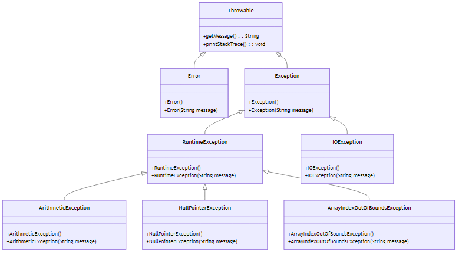
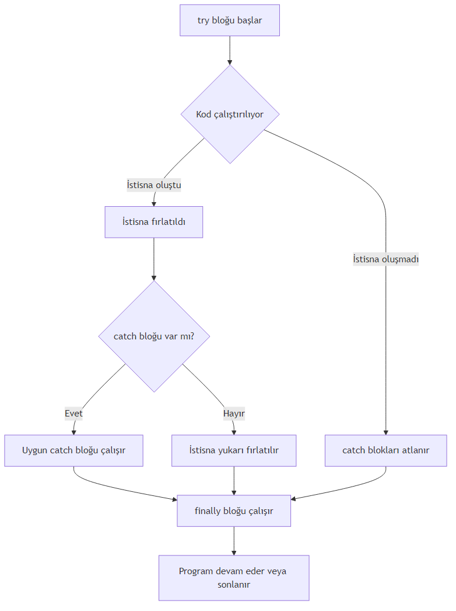
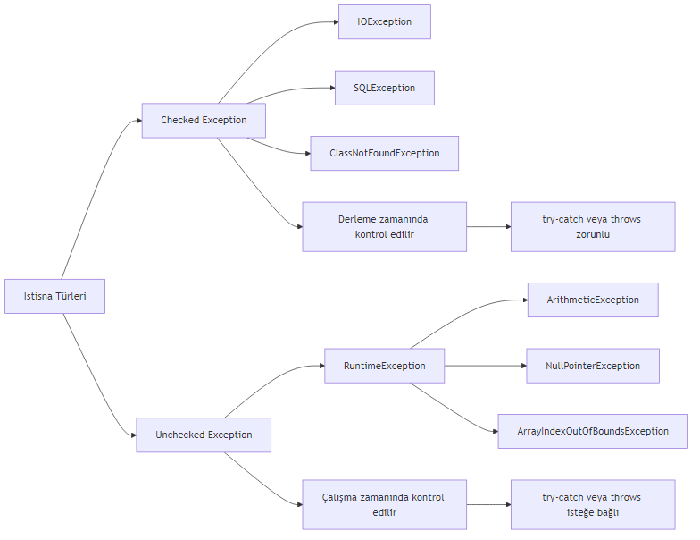
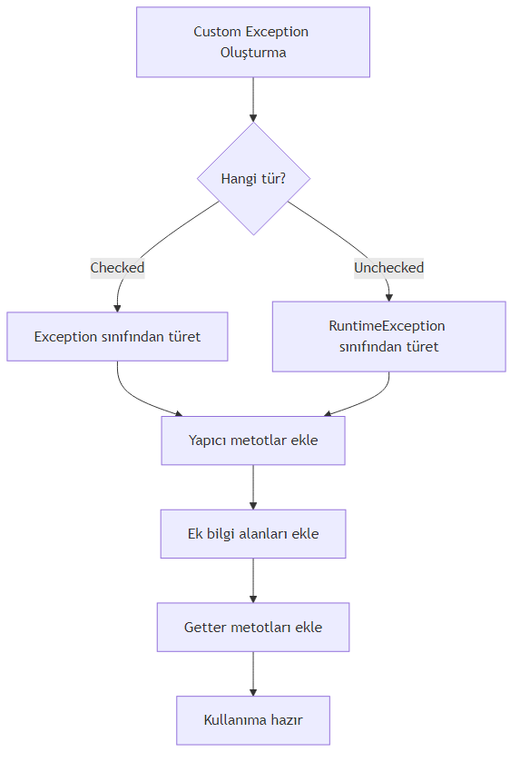
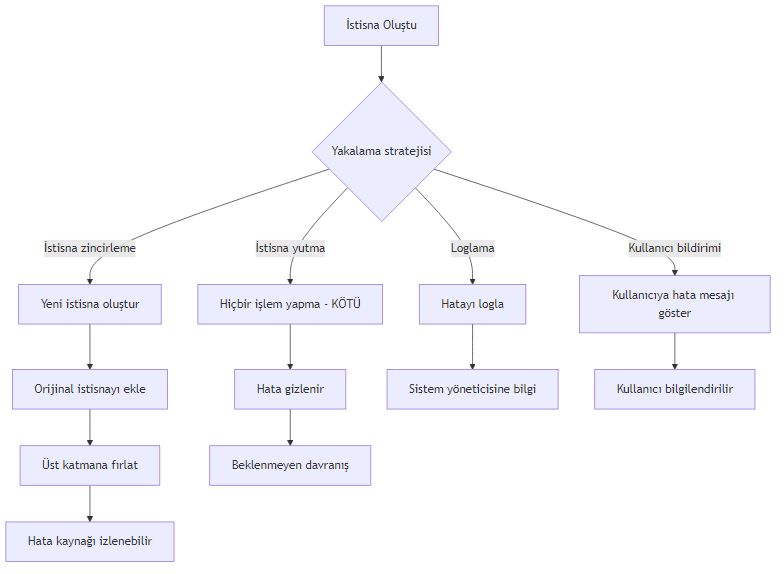

try-catch-finally, Checked/Unchecked Exception, Custom Exception ve İleri Düzey Stratejiler
2024-01-01
Yazılım geliştirme sürecinde karşılaşılan sorunlar genellikle iki ana kategoriye ayrılır: Hata (Error) ve İstisna (Exception). Bu iki kavramı anlamak, etkili bir hata yönetimi stratejisi oluşturmanın temelidir.
Derleme Zamanı Hataları (Compile-time Errors): Kod yazarken Java derleyicisi tarafından tespit edilen hatalardır. Sözdizimi hataları, tip uyuşmazlıkları veya eksik import ifadeleri bu kategoriye girer. Bu hatalar program çalıştırılmadan önce düzeltilmelidir.
Çalışma Zamanı Hataları (Runtime Errors): Program çalışırken ortaya çıkan beklenmedik durumlardır. Bu hatalar genellikle dış etkenlerden (kullanıcı girdisi, dosya erişimi, ağ sorunları) kaynaklanır. Java’da bu tür hatalar istisna olarak adlandırılır.
Java’nın istisna hiyerarşisi şu şekilde yapılandırılmıştır:

Error sınıfı: JVM (Java Virtual Machine) ile ilgili ciddi sorunları temsil eder. Örneğin,OutOfMemoryError, StackOverflowError gibi durumlar. Bu hatalar genellikle program tarafından yakalanamaz ve yönetilemez.
Exception sınıfı: Program tarafından yakalanıp yönetilebilen istisnai durumları temsil eder. İki alt kategoriye ayrılır: - Checked Exception: Derleme zamanında kontrol edilen istisnalar (IOException, SQLException) - Unchecked Exception: Çalışma zamanında ortaya çıkan istisnalar (RuntimeException alt sınıfları)
Aşağıda en sık karşılaşılan istisna türleri ve neden oluştukları açıklanmıştır:
| İstisna Türü | Oluşma Nedeni | Örnek Senaryo |
|---|---|---|
| ArithmeticException | Matematiksel işlem hatası | Sıfıra bölme |
| NullPointerException | Null referans üzerinde işlem | Metot çağrısı yapılmamış nesne |
| ArrayIndexOutOfBoundsException | Dizi sınırları dışına çıkma | Dizinin 5. elemanına erişmeye çalışmak (dizi boyutu 5 ise) |
| FileNotFoundException | Dosya bulunamaması | Var olmayan bir dosyayı açmaya çalışmak |
| NumberFormatException | Sayısal dönüşüm hatası | “abc” string’ini integer’a çevirmeye çalışmak |
Aşağıdaki örnek, hata yönetimi olmadan bir programın nasıl çöktüğünü göstermektedir:
public class HataOrnegi {
public static void main(String[] args) {
int a = 10;
int b = 0;
System.out.println("Sonuç: " + (a / b)); // ArithmeticException: / by zero
}
}Bu kod çalıştırıldığında, b değişkeni 0 olduğu için ArithmeticException fırlatılır ve program aniden sonlanır. Eğer bu işlem kritik bir uygulamada gerçekleşseydi, kullanıcı veri kaybı yaşayabilir veya sistem kararsız hale gelebilirdi.
Önemli: Hata yönetimi olmadan programın çökmesi, veri kaybına, güvenlik açıklarına ve kullanıcı deneyiminin bozulmasına neden olabilir. Bu nedenle, dayanıklı programlama için hata yönetimi zorunludur.
Hata yönetimi olmadan bir programın karşılaşabileceği sonuçlar: 1. Veri Kaybı: Kullanıcı tarafından girilen veya işlenen veriler kaybolabilir. 2. Güvenlik Açıkları: Beklenmeyen durumlar, güvenlik duvarlarını aşmak için kullanılabilir. 3. Kullanıcı Deneyimi: Ani çökmeler, kullanıcıların sisteme olan güvenini azaltır. 4. Sistem Kararsızlığı: Kaynak sızıntıları ve tutarsız durumlar sistemin çökmesine yol açabilir.
Java’da istisna yönetiminin temel yapı taşı try-catch-finally bloklarıdır. Bu yapı sayesinde, potansiyel olarak istisna fırlatabilecek kodlar güvenli bir şekilde çalıştırılabilir.
try bloğu: İstisna oluşma ihtimali olan kodların yazıldığı bloktur. Bu blok içinde bir istisna oluşursa, kontrol hemen uygun catch bloğuna geçer.
catch bloğu: Belirli bir istisna türünü yakalamak ve işlemek için kullanılır. Birden fazla catch bloğu tanımlanabilir.
finally bloğu: İstisna oluşsa da oluşmasa da her durumda çalıştırılması gereken kodlar için kullanılır. Genellikle kaynak temizleme işlemleri için tercih edilir.

### Çoklu catch Blokları ve finally KullanımıAşağıdaki örnek, bir dosyayı okurken karşılaşılabilecek farklı istisna türlerini nasıl yönetebileceğinizi göstermektedir:
import java.io.*;
public class TryCatchOrnegi {
public static void main(String[] args) {
BufferedReader reader = null;
try {
reader = new BufferedReader(new FileReader("dosya.txt"));
String satir = reader.readLine();
System.out.println(satir);
} catch (FileNotFoundException e) {
System.out.println("Dosya bulunamadı: " + e.getMessage());
} catch (IOException e) {
System.out.println("Okuma hatası: " + e.getMessage());
} finally {
try {
if (reader != null) {
reader.close();
}
} catch (IOException e) {
System.out.println("Kapatma hatası");
}
}
}
}Bu örnekte:
1. try bloğu: Dosyayı açar ve okur.
2. catch blokları:
- FileNotFoundException: Dosya bulunamazsa yakalanır.
- IOException: Okuma sırasında başka bir hata oluşursa yakalanır.
3. finally bloğu: Her durumda dosyayı kapatır.
Önemli: finally bloğu, kaynak yönetimi için kritik öneme sahiptir. Dosya, ağ bağlantısı veya veritabanı bağlantısı gibi kaynakların her durumda serbest bırakılmasını sağlar.
Aşağıdaki uygulama, kullanıcıdan alınan iki sayıyı bölen ve sonucu bir dosyaya yazan programdır:
import java.io.*;
import java.util.Scanner;
public class BolmeVeDosyayaYaz {
public static void main(String[] args) {
Scanner scanner = new Scanner(System.in);
BufferedWriter writer = null;
try {
System.out.print("Birinci sayıyı girin: ");
int a = Integer.parseInt(scanner.nextLine());
System.out.print("İkinci sayıyı girin: ");
int b = Integer.parseInt(scanner.nextLine());
int sonuc = a / b;
writer = new BufferedWriter(new FileWriter("sonuc.txt"));
writer.write("Bölme sonucu: " + sonuc);
System.out.println("Sonuç dosyaya yazıldı.");
} catch (NumberFormatException e) {
System.out.println("Geçersiz sayı formatı: " + e.getMessage());
} catch (ArithmeticException e) {
System.out.println("Sıfıra bölme hatası: " + e.getMessage());
} catch (IOException e) {
System.out.println("Dosya yazma hatası: " + e.getMessage());
} finally {
try {
if (writer != null) {
writer.close();
}
scanner.close();
} catch (IOException e) {
System.out.println("Kapatma hatası");
}
}
}
}Bu uygulama şu istisna durumlarını yönetir: 1. NumberFormatException: Kullanıcı sayı yerine harf girerse 2. ArithmeticException: İkinci sayı 0 girilirse 3. IOException: Dosyaya yazma işlemi başarısız olursa
finally bloğunun kaynak yönetimindeki önemi: - Kaynak Sızıntısını Önler: Açık kalan dosyalar, ağ bağlantıları veya veritabanı bağlantıları sistem kaynaklarını tüketir. - Her Durumda Çalışır: İstisna oluşsa da oluşmasa da çalışır. - Temizlik Kodları İçin İdealdir: Loglama, bildirim gönderme gibi işlemler için kullanılabilir.
Checked Exception’lar, derleme zamanında Java derleyicisi tarafından kontrol edilen istisnalardır. Bu tür istisnalar, ya try-catch bloğu ile yakalanmalı ya da metot imzasında throws anahtar kelimesi ile bildirilmelidir.
Özellikler:
- Exception sınıfının RuntimeException dışındaki alt sınıflarıdır.
- Derleme hatasına neden olur.
- Genellikle dış etkenlerden kaynaklanır (dosya, ağ, veritabanı).
- Programcı bu istisnaları yönetmek zorundadır.
Unchecked Exception’lar, çalışma zamanında ortaya çıkan istisnalardır. Bu tür istisnaların try-catch ile yakalanması veya throws ile bildirilmesi zorunlu değildir.
Özellikler:
- RuntimeException ve alt sınıflarıdır.
- Derleme hatasına neden olmaz.
- Genellikle programlama hatalarından kaynaklanır (null kontrolü, dizi sınırları).
- Programcı isterse yakalayabilir, ancak zorunlu değildir.

### Her İki Türün KarşılaştırılmasıAşağıdaki örnek, checked ve unchecked exception arasındaki farkı göstermektedir:
import java.io.*;
public class ExceptionTurleri {
// Checked exception - bildirim zorunlu
public static void dosyaOku() throws IOException {
FileReader file = new FileReader("test.txt");
// Dosya okuma işlemleri
file.close();
}
// Unchecked exception - bildirim zorunlu değil
public static void bolmeIslemi(int a, int b) {
if (b == 0) {
throw new ArithmeticException("Sıfıra bölme hatası");
}
System.out.println("Sonuç: " + (a / b));
}
public static void main(String[] args) {
// Unchecked exception yakalama (isteğe bağlı)
try {
bolmeIslemi(10, 0);
} catch (ArithmeticException e) {
System.out.println("Unchecked exception yakalandı: " + e.getMessage());
}
// Checked exception yakalama (zorunlu)
try {
dosyaOku();
} catch (IOException e) {
System.out.println("Checked exception yakalandı: " + e.getMessage());
}
}
}Önemli: Checked exception’lar, API kullanıcılarının hata durumlarını yönetmesini sağlar. Unchecked exception’lar ise genellikle programlama hatalarını belirtir ve düzeltilmesi gerekir.
Aşağıdaki hesap makinesi programı, hem checked hem de unchecked exception’ları yönetmektedir:
import java.io.*;
import java.util.Scanner;
public class HesapMakinesi {
// Checked exception - dosyaya yazma işlemi
public static void sonucuKaydet(int sonuc) throws IOException {
try (BufferedWriter writer = new BufferedWriter(new FileWriter("hesap_log.txt", true))) {
writer.write("İşlem sonucu: " + sonuc);
writer.newLine();
}
}
// Unchecked exception - bölme işlemi
public static int bol(int a, int b) {
if (b == 0) {
throw new ArithmeticException("Sıfıra bölme hatası");
}
return a / b;
}
public static void main(String[] args) {
Scanner scanner = new Scanner(System.in);
try {
System.out.print("Birinci sayı: ");
int sayi1 = Integer.parseInt(scanner.nextLine());
System.out.print("İkinci sayı: ");
int sayi2 = Integer.parseInt(scanner.nextLine());
// Unchecked exception - bölme
int sonuc = bol(sayi1, sayi2);
System.out.println("Sonuç: " + sonuc);
// Checked exception - dosyaya kaydet
sonucuKaydet(sonuc);
System.out.println("Sonuç kaydedildi.");
} catch (NumberFormatException e) {
System.out.println("Geçersiz sayı formatı: " + e.getMessage());
} catch (ArithmeticException e) {
System.out.println("Matematiksel hata: " + e.getMessage());
} catch (IOException e) {
System.out.println("Dosya yazma hatası: " + e.getMessage());
} finally {
scanner.close();
}
}
}Hangi durumda hangi tür istisna kullanılmalı?
| Durum | Önerilen İstisna Türü | Neden |
|---|---|---|
| Dosya işlemleri | Checked (IOException) | Kullanıcı dosyayı silebilir veya taşıyabilir |
| Ağ bağlantıları | Checked (SocketException) | Ağ kesintileri beklenen durumlardır |
| Null kontrolü | Unchecked (NullPointerException) | Programlama hatasıdır, düzeltilmelidir |
| Dizi sınırları | Unchecked (ArrayIndexOutOfBoundsException) | Programlama hatasıdır |
| Kullanıcı girdisi | Unchecked (NumberFormatException) | Genellikle doğrulama ile önlenebilir |
| Veritabanı bağlantısı | Checked (SQLException) | Dış etkenlere bağlıdır |
Bazı durumlarda, Java’nın standart istisna sınıfları ihtiyaçlarınızı karşılamayabilir. Bu gibi durumlarda, kendi özel istisna sınıflarınızı oluşturabilirsiniz.
Özel istisna oluşturma adımları:
Exception (checked) veya RuntimeException (unchecked) sınıfından türetmeString message parametreli bir yapıcı metot
### Örnek: Kullanıcı Doğrulama için Özel İstisnaAşağıdaki örnek, geçersiz yaş değerleri için özel bir istisna sınıfı oluşturmayı göstermektedir:
// Özel istisna sınıfı - Checked exception
class InvalidAgeException extends Exception {
private int hataliYas;
public InvalidAgeException(String message, int hataliYas) {
super(message);
this.hataliYas = hataliYas;
}
public int getHataliYas() {
return hataliYas;
}
}
public class CustomExceptionOrnegi {
public static void yasKontrol(int yas) throws InvalidAgeException {
if (yas < 0 || yas > 150) {
throw new InvalidAgeException("Geçersiz yaş değeri", yas);
}
System.out.println("Yaş geçerli: " + yas);
}
public static void main(String[] args) {
try {
yasKontrol(-5);
} catch (InvalidAgeException e) {
System.out.println("Hata: " + e.getMessage());
System.out.println("Hatalı değer: " + e.getHataliYas());
}
try {
yasKontrol(25);
System.out.println("İkinci kontrol başarılı.");
} catch (InvalidAgeException e) {
System.out.println("Buraya gelmez");
}
}
}Önemli: Özel istisna sınıfları, hata mesajlarını daha anlamlı hale getirir ve hata ayıklama sürecini kolaylaştırır. Ayrıca, API kullanıcılarına hangi hata durumlarıyla karşılaşabileceklerini açıkça belirtir.
Aşağıdaki uygulama, banka hesap işlemleri için çeşitli özel istisna sınıfları tasarlamaktadır:
// Özel istisna sınıfları
class YetersizBakiyeException extends Exception {
private double mevcutBakiye;
private double istenenMiktar;
public YetersizBakiyeException(String message, double mevcutBakiye, double istenenMiktar) {
super(message);
this.mevcutBakiye = mevcutBakiye;
this.istenenMiktar = istenenMiktar;
}
public double getMevcutBakiye() { return mevcutBakiye; }
public double getIstenenMiktar() { return istenenMiktar; }
}
class GecersizHesapNumarasiException extends RuntimeException {
private String hesapNumarasi;
public GecersizHesapNumarasiException(String message, String hesapNumarasi) {
super(message);
this.hesapNumarasi = hesapNumarasi;
}
public String getHesapNumarasi() { return hesapNumarasi; }
}
class NegatifParaMiktariException extends IllegalArgumentException {
private double miktar;
public NegatifParaMiktariException(String message, double miktar) {
super(message);
this.miktar = miktar;
}
public double getMiktar() { return miktar; }
}
// Banka hesap sınıfı
class BankaHesap {
private String hesapNumarasi;
private double bakiye;
public BankaHesap(String hesapNumarasi, double baslangicBakiyesi) {
if (hesapNumarasi == null || hesapNumarasi.isEmpty()) {
throw new GecersizHesapNumarasiException("Hesap numarası boş olamaz", hesapNumarasi);
}
this.hesapNumarasi = hesapNumarasi;
this.bakiye = baslangicBakiyesi;
}
public void paraCek(double miktar) throws YetersizBakiyeException, NegatifParaMiktariException {
if (miktar < 0) {
throw new NegatifParaMiktariException("Negatif para miktarı", miktar);
}
if (miktar > bakiye) {
throw new YetersizBakiyeException("Yetersiz bakiye", bakiye, miktar);
}
bakiye -= miktar;
System.out.println("Para çekme başarılı. Kalan bakiye: " + bakiye);
}
public void paraYatir(double miktar) throws NegatifParaMiktariException {
if (miktar < 0) {
throw new NegatifParaMiktariException("Negatif para miktarı", miktar);
}
bakiye += miktar;
System.out.println("Para yatırma başarılı. Yeni bakiye: " + bakiye);
}
public double getBakiye() { return bakiye; }
public String getHesapNumarasi() { return hesapNumarasi; }
}
public class BankaHesapOrnegi {
public static void main(String[] args) {
try {
BankaHesap hesap = new BankaHesap("123456", 1000.0);
System.out.println("Hesap oluşturuldu: " + hesap.getHesapNumarasi());
try {
hesap.paraCek(1500); // Yetersiz bakiye
} catch (YetersizBakiyeException e) {
System.out.println("Hata: " + e.getMessage());
System.out.println("Mevcut bakiye: " + e.getMevcutBakiye());
System.out.println("İstenen miktar: " + e.getIstenenMiktar());
}
try {
hesap.paraYatir(-100); // Negatif miktar
} catch (NegatifParaMiktariException e) {
System.out.println("Hata: " + e.getMessage());
System.out.println("Girilen miktar: " + e.getMiktar());
}
hesap.paraCek(500); // Başarılı işlem
System.out.println("Güncel bakiye: " + hesap.getBakiye());
} catch (GecersizHesapNumarasiException e) {
System.out.println("Kritik hata: " + e.getMessage());
System.out.println("Hatalı hesap: " + e.getHesapNumarasi());
} catch (YetersizBakiyeException | NegatifParaMiktariException e) {
System.out.println("İşlem hatası: " + e.getMessage());
}
}
}Özel istisna kullanmanın avantajları ve dezavantajları:
Avantajlar: - Anlamlı hata mesajları: Hatanın kaynağı ve detayları hakkında daha fazla bilgi sağlar - Kod okunabilirliği: Hangi hata durumlarının beklendiğini açıkça belirtir - Hata ayıklama: Hatalı değerler ve durumlar hakkında ek bilgi taşır - API tasarımı: Kullanıcılara hangi hata durumlarıyla karşılaşabileceklerini gösterir
Dezavantajlar: - Kod karmaşıklığı: Çok fazla özel istisna sınıfı oluşturmak kodu karmaşık hale getirebilir - Performans: İstisna oluşturma ve yakalama işlemleri maliyetlidir - Bakım zorluğu: Her yeni özellik için yeni istisna sınıfları eklemek gerekebilir
Öneri: Özel istisna sınıflarını yalnızca standart istisnalar yeterli olmadığında kullanın. Aşırı kullanımdan kaçının.
Java 7 ile gelen try-with-resources özelliği, AutoCloseable arayüzünü uygulayan kaynakların otomatik olarak kapatılmasını sağlar. Bu özellik, finally bloğunda kaynak kapatma ihtiyacını ortadan kaldırır.
Sözdizimi:
try (Kaynak kaynak = new Kaynak()) {
// Kaynak kullanımı
} catch (Exception e) {
// Hata yönetimi
}Bir istisna yakalandığında, yeni bir istisna oluşturup orijinal istisnayı neden olarak eklemeye istisna zincirleme denir. Bu sayede, hata kaynağına kadar izlenebilir.
Kullanım:
try {
// Alt seviye işlem
} catch (SQLException e) {
throw new Exception("Üst seviye hata", e); // e orijinal istisna
}Birden fazla istisna türünü aynı catch bloğunda yakalamak için kullanılır. Kod tekrarını azaltır ve okunabilirliği artırır.
Kullanım:
try {
// İşlemler
} catch (IOException | SQLException e) {
// Her iki istisna türü için ortak işlem
}İstisna yutma, bir istisnayı yakalayıp hiçbir işlem yapmadan geçiştirmektir. Bu, hataların gizlenmesine ve programın beklenmeyen şekilde davranmasına neden olur.
Kötü örnek:
try {
// İşlem
} catch (Exception e) {
// Hiçbir şey yapma - istisna yutuldu!
}
### Modern Java Özellikleri ile Hata YönetimiAşağıdaki örnek, tüm ileri düzey teknikleri bir arada göstermektedir:
```java import java.io.; import java.sql.;
public class IleriHataYonetimi {
// try-with-resources ile otomatik kaynak yönetimi
public static void dosyaOkuModern() {
try (BufferedReader reader = new BufferedReader(new FileReader("dosya.txt"))) {
String satir;
while ((satir = reader.readLine()) != null) {
System.out.println(satir);
}
} catch (IOException e) {
System.err.println("Dosya okuma hatası: " + e.getMessage());
// Hata loglama
e.printStackTrace();
}
}
// Multi-catch ile çoklu istisna yakalama
public static void cokluIstisnaYakalama() {
try {
// Bazı işlemler
int[] dizi = new int[5];
dizi[10] = 30 / 0; // Hem ArithmeticException hem ArrayIndexOutOfBoundsException
} catch (ArithmeticException | ArrayIndexOutOfBoundsException e) {
System.out.println("Matematiksel veya dizi hatası: